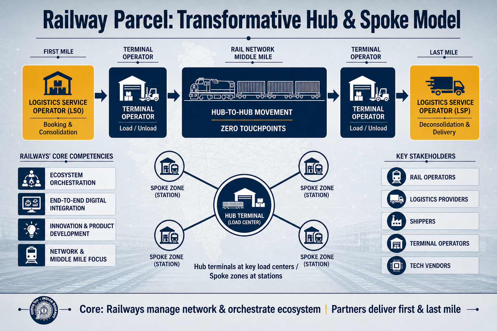

Aviral Consulting · Logistics Strategy Note
Railway Parcel: A Transformative Operating Model
Indian Railways is moving beyond incremental parcel improvements toward a transformative model—one that can multiply parcel revenue and act as a logistics enabler for Viksit Bharat 2047.
1. The Strategic Shift
The parcel segment has historically grown through piecemeal upgrades. The next leap requires a different posture: treat parcel as a productized, ecosystem-led logistics offering rather than a residual capacity business attached to passenger trains.
2. Core Competency Focus
The transformative model asks Railways to excel in functional competencies of the network and middle mile, and to orchestrate the broader parcel ecosystem around that spine.
Coordinate multiple stakeholders so the network behaves as one reliable logistics system.
Shared visibility, booking, and handoff data across rail, terminal, and LSP systems.
Parcel trains, VPU/SLR configurations, roll-cage products, and saleable service designs.
Work with LSPs, tech providers, and specialists for customer-facing and edge operations.
3. Infographic — Model at a Glance

Figure 1. Railways own the middle-mile network and ecosystem control; logistics partners own customer-facing first and last mile.
4. The Integration Imperative
Today’s parcel value chain is fragmented. Rail operators optimize track capacity and schedules; logistics providers chase door-to-door timelines; shippers demand cost and reliability; terminal operators manage transfer efficiency; technology vendors build tracking and automation. Each actor is competent—but incentives and systems are not aligned.
That fragmentation is the single greatest barrier to seamless door-to-door parcel solutions that can compete with integrated private networks. Breaking silos requires shared technology platforms and aligned commercial incentives, with Railways positioned to manage the network (line-haul) and control the ecosystem.
5. Operating Schematic: First Mile → Rail → Last Mile
The commercial model separates customer-facing logistics work from the rail spine, while keeping handoffs crisp at dedicated parcel interfaces.
Figure 2. Clear role split across the parcel chain, with Railways as the middle-mile backbone.
Role summary
- Logistics Service Operator / Provider: owns customer interface, booking, consolidation and deconsolidation centers, and final delivery.
- Terminal Operator: connected rail-head operations—segregation, loading/unloading, receiving, and transshipment—on an activity-based revenue model.
- Rail Network: solely middle-mile connectivity using parcel trains / VPU / SLR / customized consists, including roll-cage operations for SLR.
Dedicated parcel terminals are required at key hub locations; spoke locations can use dedicated parcel space within existing railway station premises.
6. Hub & Spoke Network Design
The network should mirror express-cargo practice: concentrate volume at hubs, move hub-to-hub with zero intermediate touchpoints, and use short-haul parcel trains for regional spoke distribution.
Figure 3. Dedicated hubs at load/consumption centers; spoke zones inside stations for regional access.
Design rules
- Establish dedicated parcel terminals (hubs) at key load-generation and consumption centers.
- Run hub-to-hub moves with zero intermediate touchpoints for speed, reliability, and minimal handling.
- Enable hub-to-spoke connectivity with short-haul parcel trains for faster regional distribution.
- Spokes do not need full terminals—allocate dedicated parcel zones in existing stations from which LSPs move cargo to their own centers.
- Design unidirectional volume logic: upward toward hubs for aggregation; downward toward spokes for delivery.
- Terminal operators manage luggage/parcel booking and train connections under a revenue-share with Railways, using predefined size/weight limits for faster processing.
7. Why This Model Matters
By concentrating Railways on network excellence and ecosystem control— and letting specialist partners own customer-facing edges—the parcel business can become both more reliable and more saleable. Shared digital rails, clean commercial interfaces, and hub-and-spoke physical design together convert fragmentation into a competitive door-to-door product.